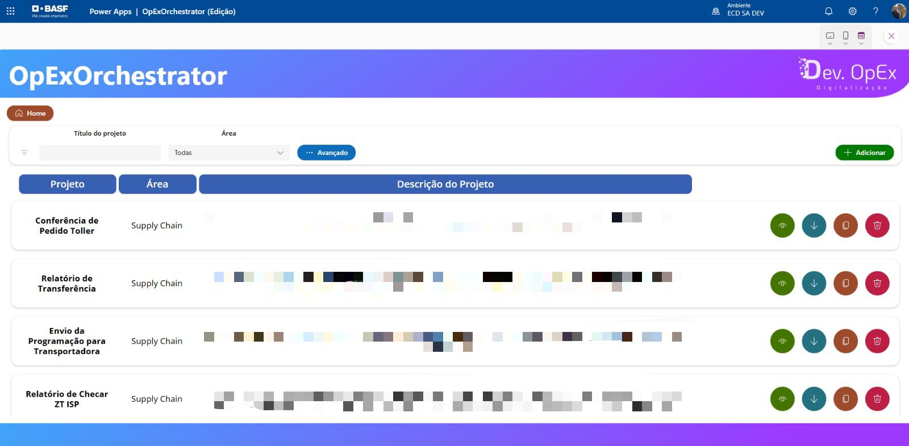
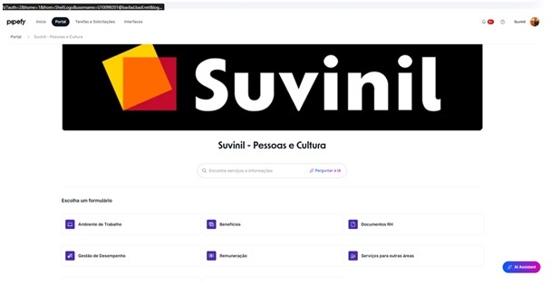
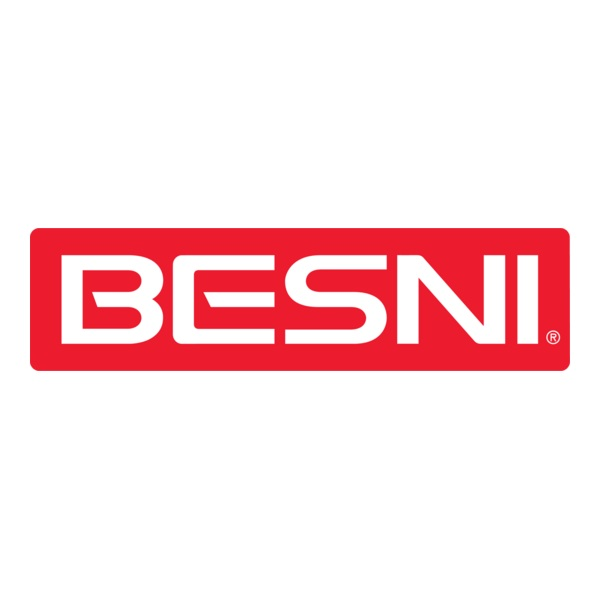
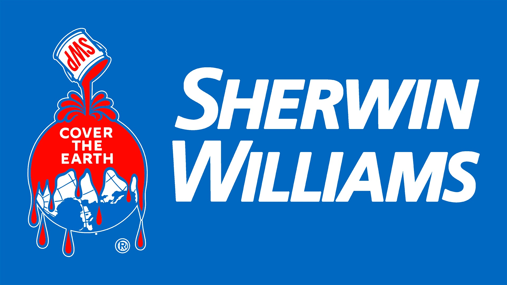

Marcio Borba Filho
Especialista em automação e soluções corporativas utilizando Power Apps, Power BI, Power Automate, Python e SQL. Foco em eficiência operacional e digitalização de processos.
Linkedin
Especialista em automação e soluções corporativas utilizando Power Apps, Power BI, Power Automate, Python e SQL. Foco em eficiência operacional e digitalização de processos.
Linkedin
Olá! Sou Marcio Borba Filho, especializado em excelência operacional e digitalização de processos.
Trabalho com Power Platform, automação e análise de dados, sempre em busca de soluções práticas que otimizem resultados e facilitem decisões estratégicas.
Valorizo aprendizado contínuo, inovação e colaboração, e acredito que boas ideias surgem quando combinamos foco técnico com criatividade. Fora do trabalho, gosto de explorar novas tecnologias, projetos pessoais e experiências que ampliem meu conhecimento e visão de mundo.
Dashboard corporativo de gestão financeira que tem como objetivo a centralização das informações de saving dos projetos implementados.

Aplicativo em Power Apps - com interface com SQL (armazenamento de dados) e Power Automate - que tem como objetivo manter os projetos desenvolvidos pela área em uma única ferramenta, facilitando possíveis rollouts futuros.

RPA desenvolvido em Python que visa um maior aproveitamento dos materiais que voltam dos nossos clientes por avarias em embalagens. Ganho significativo por ano. Este projeto foi desenvolvido com interface SQL, Power Automate e Excel.

Projeto desenvolvido às pressas por conta do processo de M&A entre a Suvinil e a Sherwin Williams. Com o objetivo de não perder a ferramenta de RH que usávamos, o projeto precisou ser desenvolvido em menos de 1 mês.



